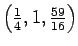

Next: Hint
Up: No Title
Previous: Background
- 1.
- Consider the surface
If a ball rolls downward, starting at the point
(1,0,3), where does it meet the z=0 plane? Using Maple,
graph the surface and
the path followed by the ball.
- 2.
- For the same surface in problem 1, where does a ball starting at

meet the z=0 plane? Using Maple,
graph the surface and
the path followed by the ball.
- 3.
- Suppose a ball is rolling down a saddle-shaped surface
z = x2-y2.
If it starts at (3,1,8), where does it cross the z=0 plane?
Using Maple,
graph the surface and
the path followed by the ball.
Louis F Rossi
2002-04-19